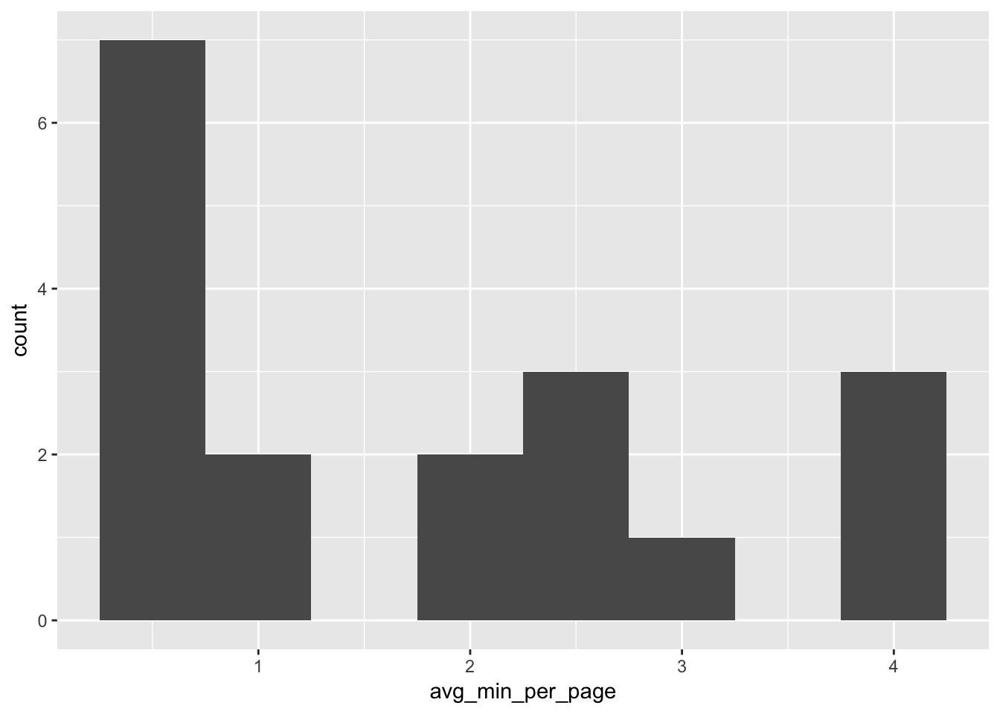

Our fax machine at work has been very slow lately. One of our frequently faxed numbers complained that it took over an hour to send a fax. Googling this problem didn’t result in any solutions, other than maybe learning that this is a common problem with fax over IP telephony. I decided to take a closer look at the logs.
The logs are printed out roughly every day or two. I scanned the log and ran it through the Adobe Acrobat OCR program. I copy and pasted the results straight into a text file and read them in.
library(stringr)
library(ggplot2)
suppressPackageStartupMessages(library(dplyr))
suppressPackageStartupMessages(library(lubridate))
tmp_con <- file("../datasets/faxes_OCR.txt")
fax <- readLines(tmp_con)
close.connection(tmp_con)
rm(tmp_con)
head(fax)## [1] "001 458 8085895865 09:24:4604?05?2016 00:04:00 1 EC HS (P14400"
## [2] "002 964 808?692?8255 10:11:02 11?22?2017 00:14:34 818 EC HS________________"
## [3] "003 965 92375965 11:58:5911?22?2017 00:00:00 0?5 1 HS FA"
## [4] "?a-?"
## [5] "004 966 12:33:0911?22?2017 00:00:08 1/1 N/A ?? RP (P"
## [6] "005 967 HeIpDesk:8776974889 13:40:40 11?22?2017 \x844J2/4T 1 EC HS ?CP14400"From this set of lines we can see that it’s roughly coded as transmission number, incoming vs. outgoing number, phone number, time and date, duration, mode, speed (?), and baud rate.
The biggest effort here was to remember how to use regular expressions. I found this cheat sheet very helpful.
Phone Numbers
First I tried to get the phone numbers. I chose the lines that had recognizable phone numbers and extracted the phone numbers (any string of 7 or more numerals).
# Get phone numbers
phoneset <- grep("[0-9]{7,}", fax) # index for lines with recognizable phone numbers## Warning in grep("[0-9]{7,}", fax): input string 6 is invalid in this localefax[phoneset] # inspect output## [1] "001 458 8085895865 09:24:4604?05?2016 00:04:00 1 EC HS (P14400"
## [2] "003 965 92375965 11:58:5911?22?2017 00:00:00 0?5 1 HS FA"
## [3] "008 ? 970 92335494 15:59:48 11?22?2017 00:04:09 4/4 1 EC (P14400"
## [4] "009 971 8089833005 7:13:36 11?22?2017 00:03:24 2/2 1 EC (P14400"
## [5] "010 972 8089833005 7:13:5411?22?2017 00:02:58 2/2 1 EC (P14400"
## [6] "011 973 4152764164 09:48:30 1 ?23-2017 00:02:56 3/3 1 EC (P2400"
## [7] "013 975 4152764164 08:17:2511?27?2017 00:04:56 4/4 1 EC HR CP2400"
## [8] "014 976 8084328827 09:39:28 11?27?2017 00:11:37 3/3 1 63 HS (P14400"
## [9] "015 977 8084328827 09:40:0811?27?2017 00:11:06 3/3 1 63 HS CP14400"
## [10] "017 r979 8084323602 13:51:0611?27?2017 00:05:15 2/2 1 63 HS CP14400"
## [11] "018 980 8083299729 14: 54:32 11?27?2017 00:00:39 2/2 1 EC HR (P2400"
## [12] "019 981 8084328827 07:45:48 11?28?2017 00:34:42 8/8 1 63 HS ? CP14400"
## [13] "021 983 9496668390 10:08:01 11?28?2017 00:01:26 4/4 1 EC HR CP2400"
## [14] "022 984 8084325506 10:39:58 11?28?2017 00:04:03 1/1 1 EC HS (P14400"
## [15] "023 985 8084325506 10:40:45 11?28?2017 00:04:01 -- 1/1 1 EC HS CP14400"
## [16] "024 986 8083344446 10:50:36 11?28?2017 00:01:24 T4/4 1 63 HR (P14400"
## [17] "025 987 8086917411 11:52:0611?28?2017 00:02:13 7/7 1 EC HR (P2400"
## [18] "026 988 6721128 15:08:24 11?28?2017 00:05:56 3/3 1 EC HS (P14400"
## [19] "027 989 8089833005 15:09:0311?28?2017 00:41:28 9/9 ? 1 EC HS (P14400"
## [20] "028 990 8089833005 15:49:0511?28?2017 00:16:40 10/10 1 EC HS (P14400"
## [21] "031 993 9496668390 05:42:2011?29?2017 00:00:57 2/2 1 EC HR (P2400"
## [22] "032 994 8089833005 08:14:11 11?29?2017 01:18:10 12/12 1 EC HS (P14400"
## [23] "034 996 8086765587 09:36:56 11?29?2017 00:00:31 2/2 1 EC HR (P2400"
## [24] "035 997 8084328781 09:40:5211?29?2017 00:10:23 4/4 1 G3 HS (P14400"
## [25] "036 998 8084328590 09:46:26 11?29?2017 00:09:53 5/5 1 EC HS CP14400"
## [26] "037 999 8089833005 09:55:05 11?29?2017 01:35:21 22/22 1 EC HS CP14400"
## [27] "038 001 99558794 10:15:35 11?29?2017 00:05:40 2/2 1 EC HS (P14400"
## [28] "039 002 8084328781 11:10:4011?29?2017 00:05:47 3/3 1 63 HS (P14400"
## [29] "040 003 8084328827 16:00:36 11?29?2017 00:10:49 3/3 1 63 HS (P14400"
## [30] "041 004 9496668390 02:26:03 11?30?2017 ? 00:00:43 2/2 1 EC HR (P2400"
## [31] "042 005 4152764164 08:02:29 11?30?2017 ? 00:03:12 4/4 1 E( HR (P2400"
## [32] "4F40 007 8089833005 09:15:50 11?30?2017 00:52:28 14/14 1 EC HS (P14400"
## [33] "045 008 4152764164 10:11:1211?30?2017 00:02:48 3/3 1 EC HR (P2400"
## [34] "046 009 9786004364 15:15:55 11?30?2017 00:19:52 8/8 1 EC HR (P2400"
## [35] "047 010 9786004364 15:38:25 11?30?2017 00:19:54 8/8 1 1EC HR (P2400"
## [36] "048 011 8085860016 10:11:46 12?01?2017 00:01:55 1/1 1 EC HS (P14400"
## [37] "049 012 8089833005 10:14:45 12?01?2017 00:04:45 3/3 1 FC HS (P14400"
## [38] "050 013 3297518 11:23:4712?01?2017 00:00:36 2/2 1 EC HR________ (P2400"
## [39] "051 014 6721128 11:50:1012?01?2017 00:12:14 35/35 1 E( HR (P2400"ph_numbers <- str_extract_all(fax[phoneset], "[0-9]{7,}")
ph_numbers <- unlist(ph_numbers)Transmission Speed
Then I tried to get the speed of the transmission in minutes per page. I had to get the duration of the transmission first. Fortunately those were pretty uniform in format (hh:mm:ss). I converted these to minutes to make it easier to wrap my mind around the speeds. The str_extract_all function from the stringr package made things much easier than using regmatches.
# Get duration of transmission
time_durations <- str_extract_all(fax[phoneset], "\\d{2}:\\d{2}:\\d{2}") # times for sending and duration
durations <- sapply(time_durations, function(x) x[length(x)])
durations <- period_to_seconds(hms(durations))
durations <- durations/60 # Convert to minutesThen I needed the denominator of pages transmitted. This also had a uniform format (pages transmitted/total pages).
# Get pages transmitted
pages <- str_extract_all(fax[phoneset], "\\d+/\\d+") # pages
pages <- str_extract_all(pages, "\\d+")
pages <- sapply(pages, function(x) x[length(x)])
pages <- as.integer(pages)Baud Rate
Finally I wanted to see if the baud rate had any impact on the speed of the transmission. (It did but not in the way I would have expected…)
# Get baud rate
baud <- str_extract_all(fax[phoneset], "\\d+$")
baud <- as.integer(baud)# bind all into data frame
faxes <- data_frame(ph_numbers, durations, pages, baud)Overall Distribution
The overall distribution looked like this. Some were slow but the mode was for the fast speeds (0-1 minute per page)
faxes %>% filter(pages > 0) %>%
mutate(min_per_page = durations/pages) %>%
group_by(ph_numbers) %>%
summarize(tot_min = sum(durations), tot_pages = sum(pages)) %>%
mutate(avg_min_per_page = tot_min/tot_pages) %>%
arrange(desc(avg_min_per_page)) %>%
ggplot(aes(x = avg_min_per_page)) + geom_histogram(binwidth = 0.5)
Hypothesis: Speed Depends on the Fax Machine on the Other Side
The first hypothesis I had was that it was the fax machine on the other side having problems (or the communication between our fax machine and certain fax machines). I calculated the average minutes per page.
# hypothesis: the speed is worse for certain numbers
faxes %>% filter(pages > 0) %>%
mutate(min_per_page = durations/pages) %>%
group_by(ph_numbers) %>%
summarize(tot_min = sum(durations), tot_pages = sum(pages)) %>%
mutate(avg_min_per_page = tot_min/tot_pages) %>%
arrange(desc(avg_min_per_page))## # A tibble: 18 x 4
## ph_numbers tot_min tot_pages avg_min_per_page
## <chr> <dbl> <int> <dbl>
## 1 8084325506 8.0666667 2 4.0333333
## 2 8084328827 68.2333333 17 4.0137255
## 3 8089833005 295.2333333 74 3.9896396
## 4 99558794 5.6666667 2 2.8333333
## 5 8084323602 5.2500000 2 2.6250000
## 6 9786004364 39.7666667 16 2.4854167
## 7 8084328781 16.1666667 7 2.3095238
## 8 8084328590 9.8833333 5 1.9766667
## 9 8085860016 1.9166667 1 1.9166667
## 10 92335494 4.1500000 4 1.0375000
## 11 4152764164 13.8666667 14 0.9904762
## 12 6721128 18.1666667 38 0.4780702
## 13 9496668390 3.1000000 8 0.3875000
## 14 8083344446 1.4000000 4 0.3500000
## 15 8083299729 0.6500000 2 0.3250000
## 16 8086917411 2.2166667 7 0.3166667
## 17 3297518 0.6000000 2 0.3000000
## 18 8086765587 0.5166667 2 0.2583333Just visually inspecting it I could see that some 432- prefixes were the slowest at 4 minutes per page. The complaint of slow fax speeds came from the next number. We had occupied their fax machine for almost 5 hours over those couple of days!
That being said, it wasn’t clear that one fax machine at our work or the other work was any worse than others. Speed could vary on the type of material being faxed so there could be some variation. But clearly the one number we heard complaints from wasn’t the only one having this problem.
Hypothesis: Baud Affects Speed
The other hypothesis I had was that the transmission baud rate affected the speed of the fax. Faster baud would presumably mean faster transmission.
# hypothesis: baud affects speed
faxes <- faxes %>% filter(pages > 0) %>%
mutate(min_per_page = durations/pages)
faxes %>%
group_by(baud) %>%
summarize(avg_min_per_page = mean(min_per_page), sd_mpp = sd(min_per_page))## # A tibble: 2 x 3
## baud avg_min_per_page sd_mpp
## <int> <dbl> <dbl>
## 1 2400 0.8326049 0.7648467
## 2 14400 2.8895148 1.4448610faxes %>% ggplot(aes(x = as.factor(baud), y = min_per_page)) + geom_boxplot()
t.test(min_per_page ~ baud, faxes)##
## Welch Two Sample t-test
##
## data: min_per_page by baud
## t = -5.6497, df = 34.533, p-value = 2.336e-06
## alternative hypothesis: true difference in means is not equal to 0
## 95 percent confidence interval:
## -2.796381 -1.317439
## sample estimates:
## mean in group 2400 mean in group 14400
## 0.8326049 2.8895148This was clearly wrong. In fact the 2400 baud faxes were transmitted on average about 2 minutes faster per page!
The reason for this wasn’t clear although it could be that slower transmission meant fewer errors. There were some websites that backed this up online.
The context for this seems to disagree with the conclusion that slower baud could be faster. In fact, according to this table of fax speeds, a baud rate of 2400 should yield about 2 minutes per page, rather than the 0.8 I observed.
It’s not totally clear why some fax machines are faster than others. I didn’t look at all the features. Perhaps the Error Correction (EC) has something to do with it too. In the meantime, there is an option on the fax machine to dial things down to 4800 baud (but not 2400). I’ll try that and see if it helps at all.
Conclusion
There’s something wrong with our fax machine, and it’s still not clear what it is. In the meantime, regular expressions remain a tool that are within my reach for doing less manual data processing…